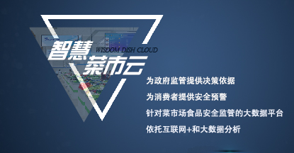

项目介绍
智慧菜市云平台是由四川慧威仕科技有限公司数十名互联网领域和食品检测领域资深人员历时3年， 自主研发设计的针对农贸市场食品安全监管的大数据平台。该平台依托互联网+和大数据分析，以快检为切入， 将快检数据、溯源信息、经营主体信息通过自主研发的智能手持一体机迅速录入并上传到智慧菜市云数据中心， 形成信息和数据的存档、分析和发布等相关后台处理；再通过智慧菜市云平台终端发布机，对快检数据、溯源数据、 食品安全法律法规、食安科普、健康用药、政府公益广告、食药监管动态以及市场管理经营信息进行发布，实现精准宣传； 最后是通过采集数据，根据应用需要通过云平台系统形成大数据分析，为政府监管提供决策依据，为消费者提供安全预警。 该平台可广泛适用于各级食品安全监管部门、各级食品安全监测部门、蔬菜生产基地、蔬菜批发基地、农贸市场、超市、食品企业等领域。
随着项目不断深入，计划打造集智慧菜市云服务平台研发中心、菜市大数据管理与服务中心，食品快检中心，集系统研发、硬件设备生产和大数据管理中心的互联网智慧菜市产业基地。业务覆盖全国菜市场、农贸市场和超市，服务全国各级食品安全监管单位、市场开办方和食品企业。
项目介绍
专用快检手持一体机：是一款4G全网通的数据采集器，它采用时下流行的Android5.1操作系统，它可以流畅的在无线网络进行数据传输，通过条形码扫描，二维码扫描，数字和图像识别的功能， 可以快速读取和录入检查食品抽样的信息，如生产批号、抽样地点、样品信息、抽检单位、质量等级、食品成分等，可用于市场监管部门、市场管理方和检测实验室。
云平台终端发布机：通过云终端软件控制、网络信息传输和多媒体终端显示构成一个完整的发布系统，支持图片、文字、网站、视频、数字信息等多媒体素材进行信息展示。